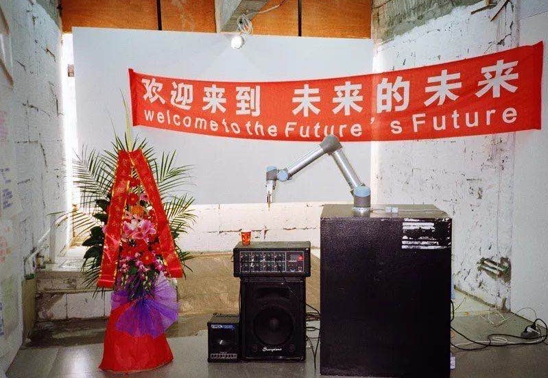

I have done a few (fun) projects in the past. If I look back and don't feel (too) bad about myself, I will list them here.
Year
Description
2022
Random Walk Memory
I have a pretty casual (but important!) story I would like to share with this project.
I was on the trip visiting my friend Yvonne Huang in Chicago which I met back in China Academy of Art. We had some good time and after a few conversations I can't stop notice that she got this crazy obsession with Ying Yang 阴阳五行 and Mei hua Yi shu 梅花易数 . Noticed that I am curious, she was nice that explained me all the mathematical algorithm about how to fortune tell your fate based on one "random" number that you come up with. And even provided a cosmology explanation to it! I can't help myself and I was like "hey that's crazy, so you just gonna let some random generated number to decide what you gonna eat and who you gonna meet with for the rest of the day?" And she was low-key mad and was like "hey, everyone is stuck in the labyrinth of some random algorithm these days. All the advertisements, the taste of music, the propaganda ,the tool that you use and the people you met.. I am just have my own early adaption methodology to it. Why I am being judged as the crazy one? "
She Clearly got a point. By that time , she was learning BASIC language on a emulator and was introduced by the teacher by this one-liner:
which generate a Matrix. She told me she has already encode the matrix info with certain encoding similar to how Ba Gua works(it's another Yin Yang Feng Shui trick!) and planning to see "point of interest" Guided by the this BASIC generated matrix.
At this point, I do not really want to stop her from doing anything anymore. But stil, I coudln't stop commenting :"So, in this way, you gonna do a random walk guided by this one-liner algorithm? You, would be the computer agent?"
I honestly thought it was part of her concept in her artwork, the concept of "random walk" like we used in Computer Science. But instead she said :"No, I have no idea what you are talking but you see my fortune telling is working. There are little angles guiding me at this moment. Please me speaking out the things of unknown."
Can't argue with that anymore.
After that, we spend good 4 hours walking on Chicago street purely by this one-liner generated rule generated map. She was having a lot of Fun and try to find color of significant in that specific place. We walked passed all 78 (13*6) points from 4 p.m till the night. We even ran into the Chicago Haloween parade.
It was a good time. I also helped her build a color extraction algorithm to extract her point of interest color from the street they build it into a VAST system.
I guess Yin yang does did some works here for us in the end of the day.
2019
The Nerfed Moria 莫伊拉，再次被削弱
It's part of my Future's Future Series Project. Yuri Kuzmin made the synth in response to his fantasy towards Chinese contemporary caligraphy scene in the FUTURE. I made the performance alongside with the idea with a poet i wrote(inspired by the video game overwatch, of course).
2018
Future's Future

Me and Yuri Kuzmin was inspired by Yuk Hui's interview.
We made a Han Mai(喊麦,a Chinese memelinzed version of "mic controller") performance to celebrate the opening of the exhibition.
A studio version of the song named "The Transhumanism of Artificial Intelligence is the Nihilism of the 21st Century" was later recorded version was made later on.
2017
The scapes
Data as Violence. A sound installation piece.
2016
Detached Organ
A comtempery music piece collobrated with Ruilei Duan. By using the help from computer vision and robotics, we were able to transfer the audience's phone into an instructable instrument for everyone to participate in